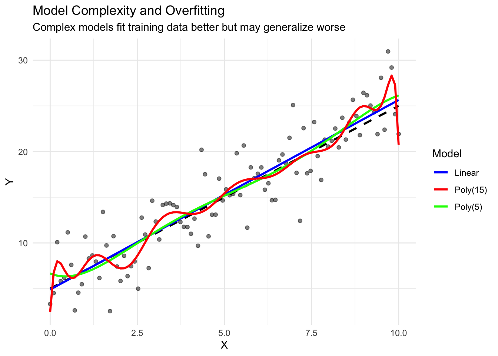
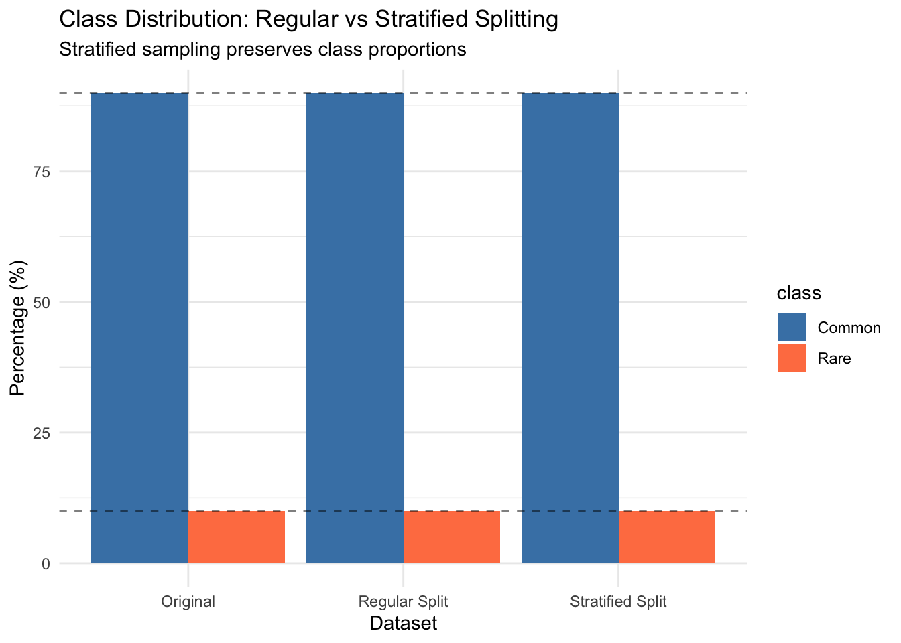
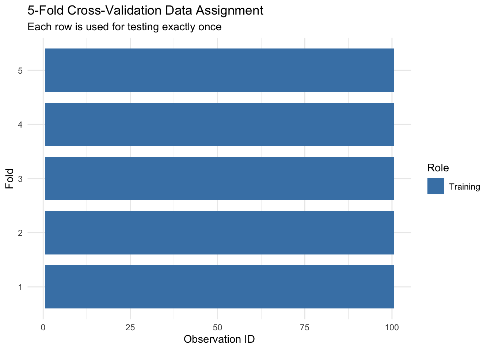
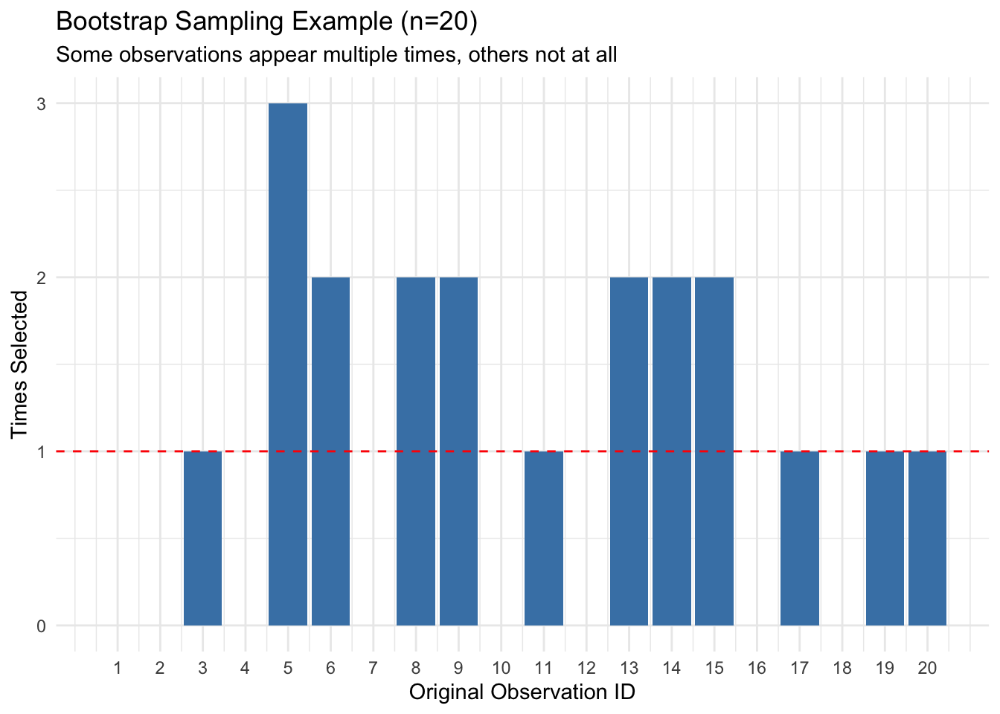
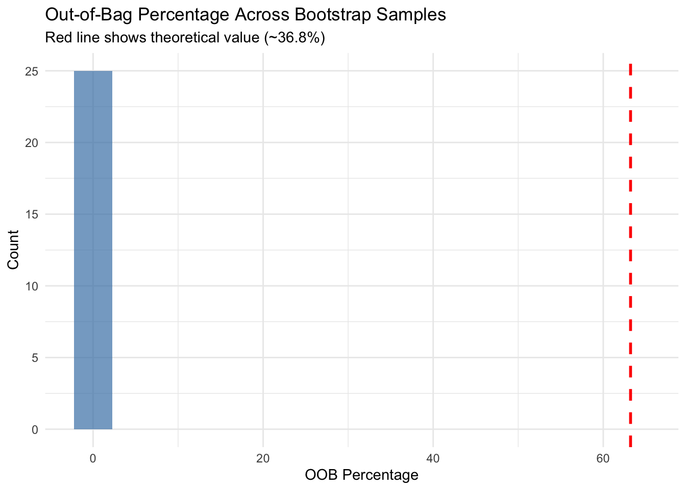
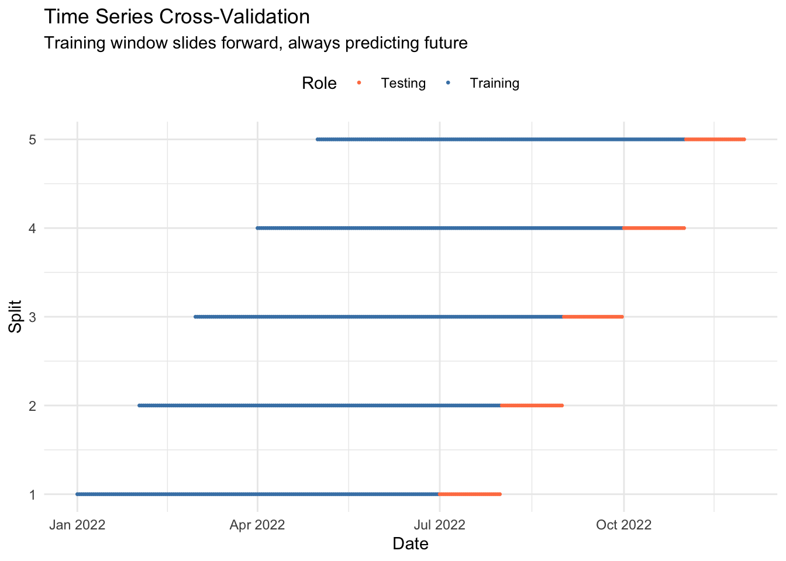
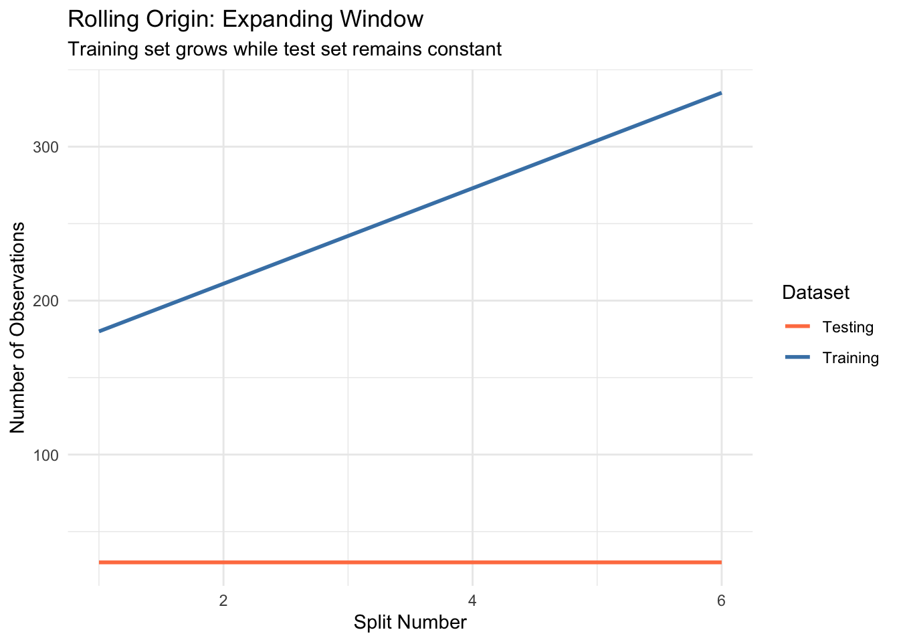
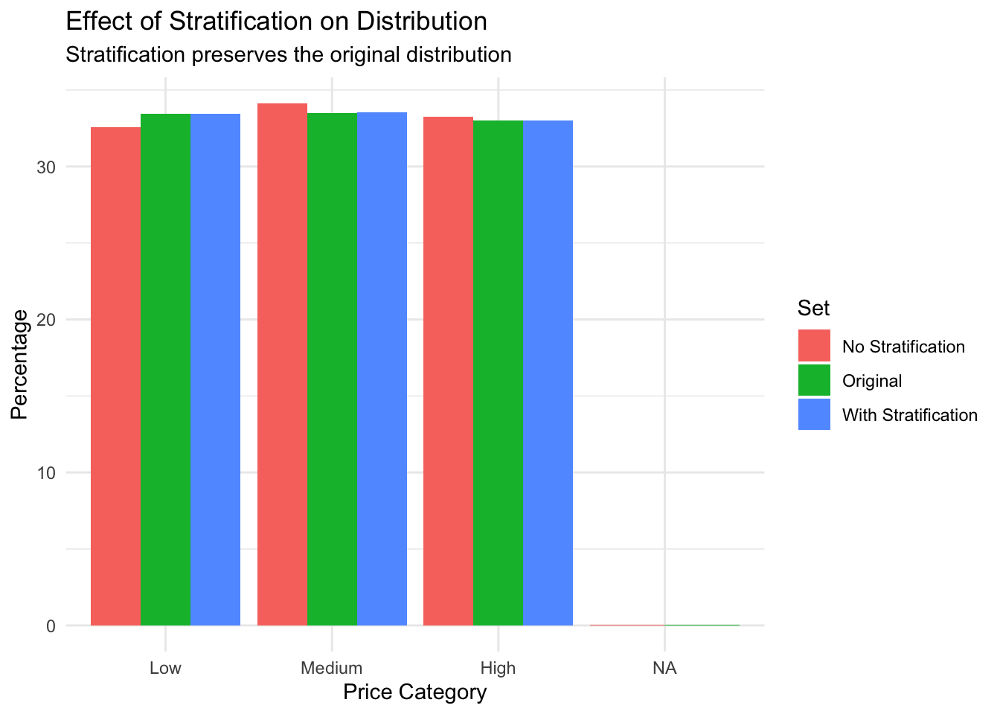
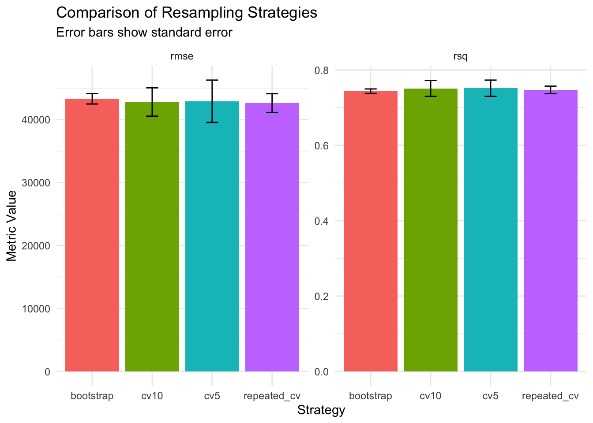
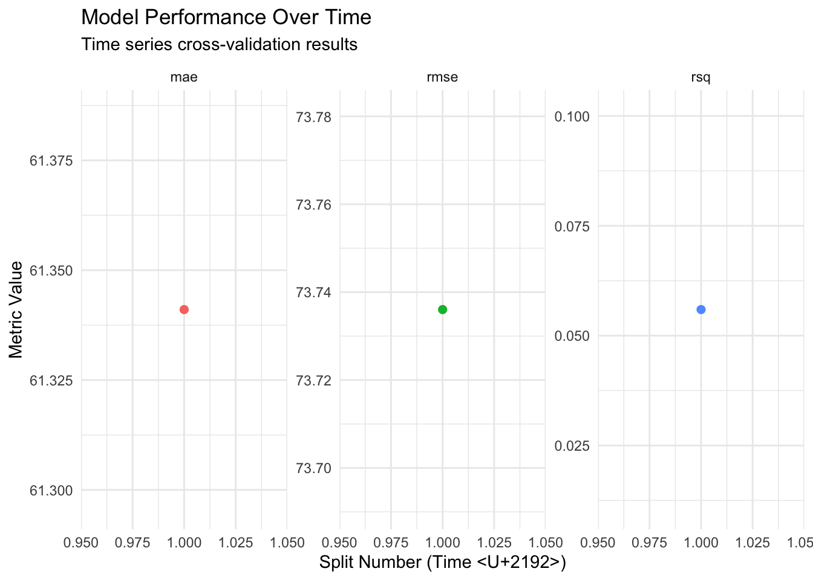

Imagine you’re studying for an exam. If you only practice with questions you’ve already seen and memorized the answers to, you might think you understand the material perfectly. But when you face new questions on the actual exam, you realize you’ve only memorized specific answers rather than understanding the concepts. This is exactly what happens in machine learning when we don’t properly split our data.
The Fundamental Problem: Overfitting
When we train a model on data and evaluate it on the same data, we get an overly optimistic estimate of performance. The model has essentially “memorized” the training data, including its noise and peculiarities.
library(tidymodels)library(tidyverse)library(modeldata)library(vip)library(patchwork)# Set theme and seedtheme_set(theme_minimal())set.seed(123)# Demonstrate overfitting with a simple examplen <-100simple_data <-tibble(x =seq(0, 10, length.out = n),y_true =2* x +5, # True relationshipy = y_true +rnorm(n, sd =3) # Add noise)# Fit increasingly complex modelsmodels <-list(linear =lm(y ~ x, data = simple_data),poly5 =lm(y ~poly(x, 5), data = simple_data),poly15 =lm(y ~poly(x, 15), data = simple_data))# Calculate training error (biased!)training_errors <-map_dbl(models, ~sqrt(mean(residuals(.)^2)))# Generate new test datatest_data <-tibble(x =seq(0, 10, length.out =50),y_true =2* x +5,y = y_true +rnorm(50, sd =3))# Calculate test error (unbiased)test_errors <-map_dbl(models, ~ { predictions <-predict(., newdata = test_data)sqrt(mean((test_data$y - predictions)^2))})# Compare errorserror_comparison <-tibble(Model =c("Linear", "Polynomial (5)", "Polynomial (15)"),`Training RMSE`= training_errors,`Test RMSE`= test_errors,`Overfit Amount`= test_errors - training_errors)knitr::kable(error_comparison, digits =2)
Model
Training RMSE
Test RMSE
Overfit Amount
Linear
2.72
3.12
0.40
Polynomial (5)
2.68
3.19
0.51
Polynomial (15)
2.46
3.22
0.76
# Visualize the fitsplot_data <- simple_data %>%mutate(linear =predict(models$linear),poly5 =predict(models$poly5),poly15 =predict(models$poly15) )ggplot(plot_data, aes(x = x)) +geom_point(aes(y = y), alpha =0.5) +geom_line(aes(y = y_true), color ="black", linewidth =1, linetype ="dashed") +geom_line(aes(y = linear, color ="Linear"), linewidth =1) +geom_line(aes(y = poly5, color ="Poly(5)"), linewidth =1) +geom_line(aes(y = poly15, color ="Poly(15)"), linewidth =1) +scale_color_manual(values =c("Linear"="blue", "Poly(5)"="green", "Poly(15)"="red")) +labs(title ="Model Complexity and Overfitting",subtitle ="Complex models fit training data better but may generalize worse",x ="X", y ="Y", color ="Model" )

Notice how the complex polynomial model (degree 15) has lower training error but higher test error - classic overfitting! This is why we need proper data splitting strategies.
The Train/Test Split
The simplest approach is to split data into training and testing sets. The training set is used to fit the model, and the test set provides an unbiased estimate of performance on new data.
Basic Splitting with rsample
The rsample package provides powerful tools for data splitting:
# Load the Ames housing datadata(ames)# Basic 75/25 splitames_split <-initial_split(ames, prop =0.75)# Extract the datasetsames_train <-training(ames_split)ames_test <-testing(ames_split)# Check the sizessplit_summary <-tibble(Dataset =c("Original", "Training", "Testing"),`Number of Rows`=c(nrow(ames), nrow(ames_train), nrow(ames_test)),Percentage =c(100, nrow(ames_train) /nrow(ames) *100,nrow(ames_test) /nrow(ames) *100))knitr::kable(split_summary, digits =1)
Dataset
Number of Rows
Percentage
Original
2930
100
Training
2197
75
Testing
733
25
# The split object contains indicesames_split
<Training/Testing/Total>
<2197/733/2930>
The initial_split() function doesn’t just randomly split the data - it’s designed with several important features: - Reproducible with set.seed() - Maintains data structure - Can do stratified sampling - Preserves data types
Stratified Sampling
When you have imbalanced classes or want to ensure representative splits, use stratified sampling:
# Create a classification example with imbalanced classesset.seed(123)imbalanced_data <-tibble(feature1 =rnorm(1000),feature2 =rnorm(1000),class =factor(c(rep("Common", 900), rep("Rare", 100))))# Regular split (might not preserve class balance)regular_split <-initial_split(imbalanced_data, prop =0.75)regular_train <-training(regular_split)# Stratified split (preserves class balance)stratified_split <-initial_split(imbalanced_data, prop =0.75, strata = class)stratified_train <-training(stratified_split)# Compare class distributionsdistribution_comparison <-bind_rows( imbalanced_data %>%count(class) %>%mutate(Dataset ="Original"), regular_train %>%count(class) %>%mutate(Dataset ="Regular Split"), stratified_train %>%count(class) %>%mutate(Dataset ="Stratified Split")) %>%group_by(Dataset) %>%mutate(Percentage = n /sum(n) *100)ggplot(distribution_comparison, aes(x = Dataset, y = Percentage, fill = class)) +geom_col(position ="dodge") +scale_fill_manual(values =c("Common"="steelblue", "Rare"="coral")) +labs(title ="Class Distribution: Regular vs Stratified Splitting",subtitle ="Stratified sampling preserves class proportions",y ="Percentage (%)" ) +geom_hline(yintercept =c(10, 90), linetype ="dashed", alpha =0.5)

Stratified sampling is crucial for: - Classification with imbalanced classes - Regression with skewed target distributions - Ensuring all groups are represented in both sets
Multi-level Splits: Train/Validation/Test
Sometimes we need three sets: - Training: For model fitting - Validation: For hyperparameter tuning - Test: For final, unbiased evaluation
# Alternative: Use initial_validation_split (tidymodels 1.1.0+)# This creates all three splits at once# val_split <- initial_validation_split(ames, prop = c(0.6, 0.2))# This would give: 60% train, 20% validation, 20% test
Cross-Validation: Making the Most of Your Data
While train/test splits are simple, they have limitations: - Only use part of the data for training - Results can vary based on the specific split - May not be reliable for small datasets
Cross-validation addresses these issues by using multiple splits.
K-Fold Cross-Validation
K-fold CV divides data into k equal parts (folds), trains on k-1 folds, and tests on the remaining fold. This process repeats k times.
# Create 5-fold cross-validationames_cv <-vfold_cv(ames_train, v =5)ames_cv
# Examine the structurefirst_fold <- ames_cv$splits[[1]]analysis(first_fold) %>%nrow() # Training data for this fold
[1] 1757
assessment(first_fold) %>%nrow() # Test data for this fold
[1] 440
# Visualize how data is split across foldsfold_assignments <-map_df(1:5, function(fold) { assessment_rows <-which(ames_cv$splits[[fold]]$in_id ==0) ames_train %>%mutate(row_id =row_number(),fold = fold,in_assessment = row_id %in% assessment_rows )}) %>%filter(row_id <=100) # Show first 100 rows for visualizationggplot(fold_assignments, aes(x = row_id, y =factor(fold), fill = in_assessment)) +geom_tile(height =0.8) +scale_fill_manual(values =c("FALSE"="steelblue", "TRUE"="coral"),labels =c("Training", "Testing")) +labs(title ="5-Fold Cross-Validation Data Assignment",subtitle ="Each row is used for testing exactly once",x ="Observation ID", y ="Fold", fill ="Role" )

The mathematics of cross-validation: - Each observation is used for testing exactly once - Each observation is used for training k-1 times - We get k performance estimates - Final estimate is the average across folds - Standard error provides uncertainty estimate
Repeated Cross-Validation
For more stable estimates, we can repeat the CV process with different random splits:
# Repeated 5-fold CV (3 repeats = 15 total resamples)ames_repeated_cv <-vfold_cv(ames_train, v =5, repeats =3)ames_repeated_cv
# Compare computational costcv_comparison <-tibble(Method =c("5-fold CV", "10-fold CV", "LOOCV"),`Number of Models`=c(5, 10, nrow(small_data)),`Training Set Size`=c(floor(nrow(small_data) *4/5),floor(nrow(small_data) *9/10),nrow(small_data) -1 ),`Test Set Size`=c(floor(nrow(small_data) /5),floor(nrow(small_data) /10),1 ))knitr::kable(cv_comparison)
Method
Number of Models
Training Set Size
Test Set Size
5-fold CV
5
40
10
10-fold CV
10
45
5
LOOCV
50
49
1
LOOCV characteristics: - Pros: Uses maximum data for training, deterministic (no randomness) - Cons: Computationally expensive, high variance, can overfit to the dataset
Bootstrap Methods
Bootstrap resampling draws samples WITH replacement from the original data. This creates datasets of the same size but with some observations repeated and others omitted.
Understanding Bootstrap
# Create bootstrap samplesames_boot <-bootstraps(ames_train, times =25)ames_boot
# Examine one bootstrap samplefirst_boot <- ames_boot$splits[[1]]# In bootstrap, some observations appear multiple timesboot_sample <-analysis(first_boot)original_ids <-1:nrow(ames_train)sampled_ids <-as.integer(rownames(boot_sample))# Count frequency of observationsid_frequency <-table(sampled_ids)freq_summary <-tibble(`Times Sampled`=0:max(id_frequency),Count =c(sum(!(original_ids %in% sampled_ids)), # Not sampled (0 times)sapply(1:max(id_frequency), function(x) sum(id_frequency == x)) ),Percentage = Count /nrow(ames_train) *100)knitr::kable(freq_summary, digits =1)
Times Sampled
Count
Percentage
0
0
0
1
2197
100
# Visualize bootstrap samplingset.seed(456)sample_viz <-tibble(original_id =1:20,bootstrap_sample =sample(1:20, 20, replace =TRUE)) %>%count(bootstrap_sample) %>%complete(bootstrap_sample =1:20, fill =list(n =0))ggplot(sample_viz, aes(x = bootstrap_sample, y = n)) +geom_col(fill ="steelblue") +geom_hline(yintercept =1, linetype ="dashed", color ="red") +scale_x_continuous(breaks =1:20) +labs(title ="Bootstrap Sampling Example (n=20)",subtitle ="Some observations appear multiple times, others not at all",x ="Original Observation ID",y ="Times Selected" )

The mathematics of bootstrap: - Probability of being selected at least once: \(1 - (1 - 1/n)^n \approx 0.632\) as \(n \to \infty\) - About 37% of observations are not selected (out-of-bag) - Provides estimates of sampling distribution - Useful for confidence intervals and bias estimation
Out-of-Bag (OOB) Error Estimation
Bootstrap’s unique property is that ~37% of data is not sampled, providing a natural test set:
# Visualize OOB percentagesggplot(oob_analysis, aes(x = pct_oob)) +geom_histogram(bins =15, fill ="steelblue", alpha =0.7) +geom_vline(xintercept = oob_summary$theoretical_oob, color ="red", linewidth =1, linetype ="dashed") +labs(title ="Out-of-Bag Percentage Across Bootstrap Samples",subtitle ="Red line shows theoretical value (~36.8%)",x ="OOB Percentage",y ="Count" )

Time Series Splitting
Time series data requires special handling because: - Observations are not independent - Future cannot be used to predict past - Temporal patterns must be preserved
Time Series Cross-Validation
# Create time series dataset.seed(789)n_days <-365ts_data <-tibble(date =seq(as.Date("2022-01-01"), by ="day", length.out = n_days),trend =seq(100, 200, length.out = n_days),seasonal =20*sin(2* pi * (1:n_days) /7), # Weekly patternnoise =rnorm(n_days, sd =10),value = trend + seasonal + noise)# Time series split - expanding windowts_initial <-180# Initial training sizets_assess <-30# Assessment sizets_splits <-sliding_period( ts_data, date,period ="month",lookback =5, # Use 6 months of dataassess_stop =1# Assess on next month)# Visualize time series CVsplit_viz <-map_df(1:min(5, length(ts_splits$splits)), function(i) { split <- ts_splits$splits[[i]] train_data <-analysis(split) %>%mutate(role ="Training", split_id = i) test_data <-assessment(split) %>%mutate(role ="Testing", split_id = i)bind_rows(train_data, test_data)})ggplot(split_viz, aes(x = date, y = split_id, color = role)) +geom_point(size =0.5) +scale_color_manual(values =c("Training"="steelblue", "Testing"="coral")) +labs(title ="Time Series Cross-Validation",subtitle ="Training window slides forward, always predicting future",x ="Date", y ="Split", color ="Role" ) +theme(legend.position ="top")

Time series splitting strategies: - Expanding window: Training set grows over time - Sliding window: Fixed-size training window - Skip periods: Gap between training and testing
Rolling Origin Evaluation
# Rolling origin (expanding window)rolling_splits <-rolling_origin( ts_data,initial =180, # Start with 180 daysassess =30, # Assess next 30 daysskip =30, # Skip 30 days between splitscumulative =TRUE# Expanding window)# Calculate how training size growsrolling_summary <- rolling_splits %>%mutate(train_size =map_int(splits, ~nrow(analysis(.))),test_size =map_int(splits, ~nrow(assessment(.))) ) %>%select(id, train_size, test_size) %>%mutate(split =row_number())ggplot(rolling_summary, aes(x = split)) +geom_line(aes(y = train_size, color ="Training"), linewidth =1) +geom_line(aes(y = test_size, color ="Testing"), linewidth =1) +scale_color_manual(values =c("Training"="steelblue", "Testing"="coral")) +labs(title ="Rolling Origin: Expanding Window",subtitle ="Training set grows while test set remains constant",x ="Split Number", y ="Number of Observations",color ="Dataset" )

Nested Resampling
When we need to tune hyperparameters AND get an unbiased performance estimate, we use nested resampling: - Outer loop: For performance estimation - Inner loop: For hyperparameter tuning
# Create nested resampling# Outer: 5-fold CV for performance estimation# Inner: 5-fold CV for hyperparameter tuning# Outer resamplingouter_cv <-vfold_cv(ames_train, v =5)# For each outer fold, create inner resamplingnested_cv <-map(outer_cv$splits, function(outer_split) {# Training data for this outer fold outer_train <-analysis(outer_split)# Create inner CV on the outer training data inner_cv <-vfold_cv(outer_train, v =5)list(outer_split = outer_split,inner_cv = inner_cv )})# Visualize nested structurenested_viz <-tibble(`Outer Fold`=1:5,`Outer Training Size`=map_int(outer_cv$splits, ~nrow(analysis(.))),`Outer Test Size`=map_int(outer_cv$splits, ~nrow(assessment(.))),`Inner Folds`=5,`Total Models per Outer Fold`=5,`Total Models Overall`=25)knitr::kable(nested_viz)
Outer Fold
Outer Training Size
Outer Test Size
Inner Folds
Total Models per Outer Fold
Total Models Overall
1
1757
440
5
5
25
2
1757
440
5
5
25
3
1758
439
5
5
25
4
1758
439
5
5
25
5
1758
439
5
5
25
# Conceptual diagramcat("Nested Resampling Structure:============================Full Training Data | ├── Outer Fold 1 │ ├── Outer Training (80%) │ │ ├── Inner Fold 1: Train (64%) + Val (16%) │ │ ├── Inner Fold 2: Train (64%) + Val (16%) │ │ ├── Inner Fold 3: Train (64%) + Val (16%) │ │ ├── Inner Fold 4: Train (64%) + Val (16%) │ │ └── Inner Fold 5: Train (64%) + Val (16%) │ └── Outer Test (20%) - Never seen during tuning │ ├── Outer Fold 2 │ └── [Same structure] ...")
Nested Resampling Structure:
============================
Full Training Data
|
├── Outer Fold 1
│ ├── Outer Training (80%)
│ │ ├── Inner Fold 1: Train (64%) + Val (16%)
│ │ ├── Inner Fold 2: Train (64%) + Val (16%)
│ │ ├── Inner Fold 3: Train (64%) + Val (16%)
│ │ ├── Inner Fold 4: Train (64%) + Val (16%)
│ │ └── Inner Fold 5: Train (64%) + Val (16%)
│ └── Outer Test (20%) - Never seen during tuning
│
├── Outer Fold 2
│ └── [Same structure]
...
Nested resampling is crucial for: - Unbiased performance estimation when tuning - Comparing different modeling strategies - Understanding generalization performance
Validation Sets in Practice
Sometimes we want a single validation set for quick iterations:
# Create a validation setval_split <-initial_validation_split(ames, prop =c(0.6, 0.2))# Extract all three setstrain_set <-training(val_split)val_set <-validation(val_split)test_set <-testing(val_split)# Use validation set for model selectionmodels_to_compare <-list(simple =recipe(Sale_Price ~ Gr_Liv_Area + Overall_Cond, data = train_set) %>%step_dummy(all_nominal_predictors()),moderate =recipe(Sale_Price ~ Gr_Liv_Area + Overall_Cond + Year_Built + Neighborhood, data = train_set) %>%step_dummy(all_nominal_predictors()),complex =recipe(Sale_Price ~ Gr_Liv_Area + Overall_Cond + Year_Built + Neighborhood + Total_Bsmt_SF + First_Flr_SF, data = train_set) %>%step_dummy(all_nominal_predictors()))# Fit models and evaluate on validation setlm_spec <-linear_reg() %>%set_engine("lm")validation_results <-map_df(names(models_to_compare), function(model_name) { recipe <- models_to_compare[[model_name]] wf <-workflow() %>%add_recipe(recipe) %>%add_model(lm_spec)# Fit on training fit <- wf %>%fit(train_set)# Predict on validation val_pred <- fit %>%predict(val_set) %>%bind_cols(val_set)# Calculate metrics val_pred %>%metrics(truth = Sale_Price, estimate = .pred) %>%mutate(model = model_name)})# Select best model based on validation performancebest_model <- validation_results %>%filter(.metric =="rmse") %>%arrange(.estimate) %>%slice(1) %>%pull(model)print(paste("Best model based on validation set:", best_model))
[1] "Best model based on validation set: complex"
# Final evaluation on test set (only done once!)final_recipe <- models_to_compare[[best_model]]final_fit <-workflow() %>%add_recipe(final_recipe) %>%add_model(lm_spec) %>%fit(train_set)test_pred <- final_fit %>%predict(test_set) %>%bind_cols(test_set)final_performance <- test_pred %>%metrics(truth = Sale_Price, estimate = .pred)knitr::kable(final_performance, digits =3)
.metric
.estimator
.estimate
rmse
standard
38837.693
rsq
standard
0.797
mae
standard
24125.346
Choosing the Right Resampling Strategy
Different strategies for different situations:
# Decision guidestrategy_guide <-tibble(Scenario =c("Large dataset (n > 10,000)","Medium dataset (1,000 < n < 10,000)","Small dataset (n < 1,000)","Imbalanced classes","Time series data","Quick prototyping","Final evaluation","Hyperparameter tuning","Model comparison","Uncertainty estimation" ),`Recommended Strategy`=c("Simple train/test split or validation set","5 or 10-fold CV","Repeated CV or LOOCV","Stratified CV","Time series CV or rolling origin","Validation set","Held-out test set (touched only once)","Nested CV","Repeated CV","Bootstrap" ),Reasoning =c("Sufficient data for reliable estimates","Balance between bias and variance","Maximize training data usage","Preserve class proportions","Respect temporal ordering","Fast iteration and feedback","Unbiased final assessment","Avoid overfitting to validation set","Stable comparison metrics","Confidence intervals and distributions" ))knitr::kable(strategy_guide)
Scenario
Recommended Strategy
Reasoning
Large dataset (n > 10,000)
Simple train/test split or validation set
Sufficient data for reliable estimates
Medium dataset (1,000 < n < 10,000)
5 or 10-fold CV
Balance between bias and variance
Small dataset (n < 1,000)
Repeated CV or LOOCV
Maximize training data usage
Imbalanced classes
Stratified CV
Preserve class proportions
Time series data
Time series CV or rolling origin
Respect temporal ordering
Quick prototyping
Validation set
Fast iteration and feedback
Final evaluation
Held-out test set (touched only once)
Unbiased final assessment
Hyperparameter tuning
Nested CV
Avoid overfitting to validation set
Model comparison
Repeated CV
Stable comparison metrics
Uncertainty estimation
Bootstrap
Confidence intervals and distributions
Common Pitfalls and Best Practices
Pitfall 1: Data Leakage
# WRONG: Preprocessing before splittingwrong_data <- ames %>%mutate(# This uses information from ALL data including test!Gr_Liv_Area_scaled =scale(Gr_Liv_Area)[,1],Sale_Price_log =log(Sale_Price) )wrong_split <-initial_split(wrong_data)wrong_train <-training(wrong_split)wrong_test <-testing(wrong_split)# RIGHT: Preprocessing after splitting (using recipes)right_split <-initial_split(ames)right_train <-training(right_split)right_test <-testing(right_split)right_recipe <-recipe(Sale_Price ~ ., data = right_train) %>%step_log(Sale_Price) %>%step_normalize(all_numeric_predictors())# The recipe learns parameters only from training data
Pitfall 2: Multiple Testing on Test Set
# WRONG: Using test set multiple times# This is pseudocode - don't actually do this!# for (model in models) {# performance <- evaluate(model, test_set)# if (performance < best_performance) {# adjust_model(model)# # Testing again - overfitting to test set!# }# }# RIGHT: Use validation set or CV for model selection# Test set only for final evaluation
Pitfall 3: Improper Stratification
# Create data with important subgroupsgrouped_data <- ames %>%mutate(price_category =cut(Sale_Price, breaks =quantile(Sale_Price, c(0, 0.33, 0.67, 1)),labels =c("Low", "Medium", "High")) )# WRONG: Not stratifying on important variablewrong_split <-initial_split(grouped_data)wrong_train <-training(wrong_split)# RIGHT: Stratify to preserve distributionright_split <-initial_split(grouped_data, strata = price_category)right_train <-training(right_split)# Compare distributionscomparison <-bind_rows( grouped_data %>%count(price_category) %>%mutate(Set ="Original"), wrong_train %>%count(price_category) %>%mutate(Set ="No Stratification"), right_train %>%count(price_category) %>%mutate(Set ="With Stratification")) %>%group_by(Set) %>%mutate(Percentage = n /sum(n) *100)ggplot(comparison, aes(x = price_category, y = Percentage, fill = Set)) +geom_col(position ="dodge") +labs(title ="Effect of Stratification on Distribution",subtitle ="Stratification preserves the original distribution",x ="Price Category", y ="Percentage" )

Exercises
Exercise 1: Implement Custom Resampling
Create a custom resampling strategy for grouped data:
# Your solution# Data with natural groups (e.g., different stores)store_data <-tibble(store_id =rep(LETTERS[1:10], each =100),date =rep(seq(as.Date("2023-01-01"), length.out =100, by ="day"), 10),sales =rnorm(1000, mean =rep(seq(100, 190, 10), each =100), sd =20))# Custom group-based CV: leave-one-store-outgroup_splits <-group_vfold_cv(store_data, group = store_id)# Examine splitssplit_summary <-map_df(1:length(group_splits$splits), function(i) { split <- group_splits$splits[[i]] train <-analysis(split) test <-assessment(split)tibble(fold = i,train_stores =n_distinct(train$store_id),test_stores =n_distinct(test$store_id),train_rows =nrow(train),test_rows =nrow(test) )})knitr::kable(split_summary)
fold
train_stores
test_stores
train_rows
test_rows
1
9
1
900
100
2
9
1
900
100
3
9
1
900
100
4
9
1
900
100
5
9
1
900
100
6
9
1
900
100
7
9
1
900
100
8
9
1
900
100
9
9
1
900
100
10
9
1
900
100
Exercise 2: Compare Resampling Strategies
Evaluate different resampling methods on the same dataset:
# Your solution# Use a subset of Ames data for speedames_subset <- ames %>%select(Sale_Price, Gr_Liv_Area, Overall_Cond, Year_Built, Lot_Area) %>%slice_sample(n =500)# Define resampling strategiesstrategies <-list(holdout =initial_split(ames_subset, prop =0.75),cv5 =vfold_cv(ames_subset, v =5),cv10 =vfold_cv(ames_subset, v =10),repeated_cv =vfold_cv(ames_subset, v =5, repeats =3),bootstrap =bootstraps(ames_subset, times =25))# Simple model for comparisonmodel_spec <-linear_reg() %>%set_engine("lm")recipe_spec <-recipe(Sale_Price ~ ., data = ames_subset)# Evaluate each strategy (except holdout which needs different handling)results <-map_df(names(strategies)[-1], function(strategy_name) { wf <-workflow() %>%add_recipe(recipe_spec) %>%add_model(model_spec)fit_resamples(wf, strategies[[strategy_name]]) %>%collect_metrics() %>%mutate(strategy = strategy_name)})# Visualize resultsggplot(results, aes(x = strategy, y = mean, fill = strategy)) +geom_col() +geom_errorbar(aes(ymin = mean - std_err, ymax = mean + std_err), width =0.2) +facet_wrap(~.metric, scales ="free_y") +labs(title ="Comparison of Resampling Strategies",subtitle ="Error bars show standard error",x ="Strategy", y ="Metric Value" ) +theme(legend.position ="none")

Exercise 3: Time Series Validation
Implement proper time series validation:
# Your solution# Generate time series data with trend and seasonalityset.seed(123)ts_exercise <-tibble(date =seq(as.Date("2021-01-01"), as.Date("2023-12-31"), by ="day"),day_of_week = lubridate::wday(date),month = lubridate::month(date),trend =seq(1000, 2000, length.out =length(date)),seasonal =100*sin(2* pi *as.numeric(date) /365),weekly =50* (day_of_week %in%c(1, 7)), # Weekend effectnoise =rnorm(length(date), 0, 50),sales = trend + seasonal + weekly + noise)# Create time-based splits# Initial training: 2 years, assess: 1 month, skip: 1 monthts_splits <-rolling_origin( ts_exercise,initial =730, # 2 yearsassess =30, # 1 monthskip =30, # Skip 1 monthcumulative =FALSE# Sliding window)# Evaluate a simple modelts_recipe <-recipe(sales ~ day_of_week + month + trend, data = ts_exercise)ts_model <-linear_reg() %>%set_engine("lm")ts_workflow <-workflow() %>%add_recipe(ts_recipe) %>%add_model(ts_model)# Fit and evaluatets_results <-fit_resamples( ts_workflow, ts_splits,metrics = yardstick::metric_set(yardstick::rmse, yardstick::mae, yardstick::rsq))# Examine performance over timets_metrics <- ts_results %>%collect_metrics() %>%mutate(split_num =rep(1:(n()/3), 3) )ggplot(ts_metrics, aes(x = split_num, y = mean, color = .metric)) +geom_line(linewidth =1) +geom_point(size =2) +facet_wrap(~.metric, scales ="free_y") +labs(title ="Model Performance Over Time",subtitle ="Time series cross-validation results",x ="Split Number (Time →)", y ="Metric Value" ) +theme(legend.position ="none")

Summary
In this comprehensive chapter, you’ve mastered:
✅ Fundamental concepts - Why proper data splitting is critical - The bias-variance tradeoff in evaluation - Training, validation, and test sets
✅ Splitting strategies - Simple holdout splits - Stratified sampling for balance - Multi-level splits for complex workflows
✅ Cross-validation techniques - K-fold and repeated CV - Leave-one-out CV - Time series CV
✅ Best practices - Avoiding data leakage - Choosing appropriate strategies - Proper use of test sets
Key takeaways: - Never evaluate on training data - Choose resampling based on your data and goals - Stratify when you have imbalanced data - Respect temporal ordering in time series - Use nested CV for unbiased tuning - Touch the test set only once!
What’s Next?
In Chapter 10, we’ll explore feature engineering with recipes, learning how to transform raw data into model-ready features.
---title: "Chapter 9: Data Splitting and Resampling - The Foundation of Model Validation"author: "David Sarrat González, Juan R González"date: todayformat: html: code-fold: false code-tools: true---## Learning ObjectivesBy the end of this chapter, you will master:- The critical importance of proper data splitting- Train/test/validation splits and when to use them- Stratified sampling for balanced splits- Cross-validation techniques and theory- Bootstrap methods for uncertainty estimation- Time series splitting strategies- Nested resampling for unbiased evaluation- Best practices and common pitfalls::: {.callout-tip}## Download R ScriptYou can download the complete R code for this chapter:[📥 Download 09-data-splitting.R](R_scripts/09-data-splitting.R){.btn .btn-primary download="09-data-splitting.R"}:::## Why Data Splitting MattersImagine you're studying for an exam. If you only practice with questions you've already seen and memorized the answers to, you might think you understand the material perfectly. But when you face new questions on the actual exam, you realize you've only memorized specific answers rather than understanding the concepts. This is exactly what happens in machine learning when we don't properly split our data.### The Fundamental Problem: OverfittingWhen we train a model on data and evaluate it on the same data, we get an overly optimistic estimate of performance. The model has essentially "memorized" the training data, including its noise and peculiarities.```{r}#| message: falselibrary(tidymodels)library(tidyverse)library(modeldata)library(vip)library(patchwork)# Set theme and seedtheme_set(theme_minimal())set.seed(123)# Demonstrate overfitting with a simple examplen <-100simple_data <-tibble(x =seq(0, 10, length.out = n),y_true =2* x +5, # True relationshipy = y_true +rnorm(n, sd =3) # Add noise)# Fit increasingly complex modelsmodels <-list(linear =lm(y ~ x, data = simple_data),poly5 =lm(y ~poly(x, 5), data = simple_data),poly15 =lm(y ~poly(x, 15), data = simple_data))# Calculate training error (biased!)training_errors <-map_dbl(models, ~sqrt(mean(residuals(.)^2)))# Generate new test datatest_data <-tibble(x =seq(0, 10, length.out =50),y_true =2* x +5,y = y_true +rnorm(50, sd =3))# Calculate test error (unbiased)test_errors <-map_dbl(models, ~ { predictions <-predict(., newdata = test_data)sqrt(mean((test_data$y - predictions)^2))})# Compare errorserror_comparison <-tibble(Model =c("Linear", "Polynomial (5)", "Polynomial (15)"),`Training RMSE`= training_errors,`Test RMSE`= test_errors,`Overfit Amount`= test_errors - training_errors)knitr::kable(error_comparison, digits =2)# Visualize the fitsplot_data <- simple_data %>%mutate(linear =predict(models$linear),poly5 =predict(models$poly5),poly15 =predict(models$poly15) )ggplot(plot_data, aes(x = x)) +geom_point(aes(y = y), alpha =0.5) +geom_line(aes(y = y_true), color ="black", linewidth =1, linetype ="dashed") +geom_line(aes(y = linear, color ="Linear"), linewidth =1) +geom_line(aes(y = poly5, color ="Poly(5)"), linewidth =1) +geom_line(aes(y = poly15, color ="Poly(15)"), linewidth =1) +scale_color_manual(values =c("Linear"="blue", "Poly(5)"="green", "Poly(15)"="red")) +labs(title ="Model Complexity and Overfitting",subtitle ="Complex models fit training data better but may generalize worse",x ="X", y ="Y", color ="Model" )```Notice how the complex polynomial model (degree 15) has lower training error but higher test error - classic overfitting! This is why we need proper data splitting strategies.## The Train/Test SplitThe simplest approach is to split data into training and testing sets. The training set is used to fit the model, and the test set provides an unbiased estimate of performance on new data.### Basic Splitting with rsampleThe `rsample` package provides powerful tools for data splitting:```{r}# Load the Ames housing datadata(ames)# Basic 75/25 splitames_split <-initial_split(ames, prop =0.75)# Extract the datasetsames_train <-training(ames_split)ames_test <-testing(ames_split)# Check the sizessplit_summary <-tibble(Dataset =c("Original", "Training", "Testing"),`Number of Rows`=c(nrow(ames), nrow(ames_train), nrow(ames_test)),Percentage =c(100, nrow(ames_train) /nrow(ames) *100,nrow(ames_test) /nrow(ames) *100))knitr::kable(split_summary, digits =1)# The split object contains indicesames_split```The `initial_split()` function doesn't just randomly split the data - it's designed with several important features:- Reproducible with set.seed()- Maintains data structure- Can do stratified sampling- Preserves data types### Stratified SamplingWhen you have imbalanced classes or want to ensure representative splits, use stratified sampling:```{r}# Create a classification example with imbalanced classesset.seed(123)imbalanced_data <-tibble(feature1 =rnorm(1000),feature2 =rnorm(1000),class =factor(c(rep("Common", 900), rep("Rare", 100))))# Regular split (might not preserve class balance)regular_split <-initial_split(imbalanced_data, prop =0.75)regular_train <-training(regular_split)# Stratified split (preserves class balance)stratified_split <-initial_split(imbalanced_data, prop =0.75, strata = class)stratified_train <-training(stratified_split)# Compare class distributionsdistribution_comparison <-bind_rows( imbalanced_data %>%count(class) %>%mutate(Dataset ="Original"), regular_train %>%count(class) %>%mutate(Dataset ="Regular Split"), stratified_train %>%count(class) %>%mutate(Dataset ="Stratified Split")) %>%group_by(Dataset) %>%mutate(Percentage = n /sum(n) *100)ggplot(distribution_comparison, aes(x = Dataset, y = Percentage, fill = class)) +geom_col(position ="dodge") +scale_fill_manual(values =c("Common"="steelblue", "Rare"="coral")) +labs(title ="Class Distribution: Regular vs Stratified Splitting",subtitle ="Stratified sampling preserves class proportions",y ="Percentage (%)" ) +geom_hline(yintercept =c(10, 90), linetype ="dashed", alpha =0.5)```Stratified sampling is crucial for:- Classification with imbalanced classes- Regression with skewed target distributions- Ensuring all groups are represented in both sets### Multi-level Splits: Train/Validation/TestSometimes we need three sets:- **Training**: For model fitting- **Validation**: For hyperparameter tuning- **Test**: For final, unbiased evaluation```{r}# Create initial splitinitial_split <-initial_split(ames, prop =0.8)train_val <-training(initial_split)test <-testing(initial_split)# Split training into train/validationtrain_val_split <-initial_split(train_val, prop =0.75)train <-training(train_val_split)validation <-testing(train_val_split)# Summary of three-way splitthree_way_summary <-tibble(Dataset =c("Training", "Validation", "Test", "Total"),Rows =c(nrow(train), nrow(validation), nrow(test), nrow(ames)),`Percentage of Total`=c(nrow(train) /nrow(ames) *100,nrow(validation) /nrow(ames) *100,nrow(test) /nrow(ames) *100,100 ))knitr::kable(three_way_summary, digits =1)# Alternative: Use initial_validation_split (tidymodels 1.1.0+)# This creates all three splits at once# val_split <- initial_validation_split(ames, prop = c(0.6, 0.2))# This would give: 60% train, 20% validation, 20% test```## Cross-Validation: Making the Most of Your DataWhile train/test splits are simple, they have limitations:- Only use part of the data for training- Results can vary based on the specific split- May not be reliable for small datasetsCross-validation addresses these issues by using multiple splits.### K-Fold Cross-ValidationK-fold CV divides data into k equal parts (folds), trains on k-1 folds, and tests on the remaining fold. This process repeats k times.```{r}# Create 5-fold cross-validationames_cv <-vfold_cv(ames_train, v =5)ames_cv# Examine the structurefirst_fold <- ames_cv$splits[[1]]analysis(first_fold) %>%nrow() # Training data for this foldassessment(first_fold) %>%nrow() # Test data for this fold# Visualize how data is split across foldsfold_assignments <-map_df(1:5, function(fold) { assessment_rows <-which(ames_cv$splits[[fold]]$in_id ==0) ames_train %>%mutate(row_id =row_number(),fold = fold,in_assessment = row_id %in% assessment_rows )}) %>%filter(row_id <=100) # Show first 100 rows for visualizationggplot(fold_assignments, aes(x = row_id, y =factor(fold), fill = in_assessment)) +geom_tile(height =0.8) +scale_fill_manual(values =c("FALSE"="steelblue", "TRUE"="coral"),labels =c("Training", "Testing")) +labs(title ="5-Fold Cross-Validation Data Assignment",subtitle ="Each row is used for testing exactly once",x ="Observation ID", y ="Fold", fill ="Role" )```The mathematics of cross-validation:- Each observation is used for testing exactly once- Each observation is used for training k-1 times- We get k performance estimates- Final estimate is the average across folds- Standard error provides uncertainty estimate### Repeated Cross-ValidationFor more stable estimates, we can repeat the CV process with different random splits:```{r}# Repeated 5-fold CV (3 repeats = 15 total resamples)ames_repeated_cv <-vfold_cv(ames_train, v =5, repeats =3)ames_repeated_cv# Compare variability: single vs repeated CV# Fit a simple model to demonstratesimple_model <-linear_reg() %>%set_engine("lm")simple_recipe <-recipe(Sale_Price ~ Gr_Liv_Area + Overall_Cond, data = ames_train)# Single CVsingle_cv_results <-workflow() %>%add_model(simple_model) %>%add_recipe(simple_recipe) %>%fit_resamples(vfold_cv(ames_train, v =5)) %>%collect_metrics()# Repeated CVrepeated_cv_results <-workflow() %>%add_model(simple_model) %>%add_recipe(simple_recipe) %>%fit_resamples(ames_repeated_cv) %>%collect_metrics()comparison <-bind_rows( single_cv_results %>%mutate(Method ="Single 5-fold CV"), repeated_cv_results %>%mutate(Method ="Repeated 5-fold CV (3x)"))ggplot(comparison, aes(x = Method, y = mean, fill = Method)) +geom_col() +geom_errorbar(aes(ymin = mean - std_err, ymax = mean + std_err), width =0.2) +facet_wrap(~.metric, scales ="free_y") +labs(title ="Single vs Repeated Cross-Validation",subtitle ="Repeated CV has smaller standard errors (more stable estimates)",y ="Metric Value" ) +theme(legend.position ="none")```### Leave-One-Out Cross-Validation (LOOCV)LOOCV is a special case where k = n (number of observations):```{r}# Create a small dataset for LOOCV demonstrationsmall_data <- ames_train %>%slice_sample(n =50) # LOOCV is computationally expensive# Create LOOCV splitsloocv_splits <-loo_cv(small_data)loocv_splits# Compare computational costcv_comparison <-tibble(Method =c("5-fold CV", "10-fold CV", "LOOCV"),`Number of Models`=c(5, 10, nrow(small_data)),`Training Set Size`=c(floor(nrow(small_data) *4/5),floor(nrow(small_data) *9/10),nrow(small_data) -1 ),`Test Set Size`=c(floor(nrow(small_data) /5),floor(nrow(small_data) /10),1 ))knitr::kable(cv_comparison)```LOOCV characteristics:- **Pros**: Uses maximum data for training, deterministic (no randomness)- **Cons**: Computationally expensive, high variance, can overfit to the dataset## Bootstrap MethodsBootstrap resampling draws samples WITH replacement from the original data. This creates datasets of the same size but with some observations repeated and others omitted.### Understanding Bootstrap```{r}# Create bootstrap samplesames_boot <-bootstraps(ames_train, times =25)ames_boot# Examine one bootstrap samplefirst_boot <- ames_boot$splits[[1]]# In bootstrap, some observations appear multiple timesboot_sample <-analysis(first_boot)original_ids <-1:nrow(ames_train)sampled_ids <-as.integer(rownames(boot_sample))# Count frequency of observationsid_frequency <-table(sampled_ids)freq_summary <-tibble(`Times Sampled`=0:max(id_frequency),Count =c(sum(!(original_ids %in% sampled_ids)), # Not sampled (0 times)sapply(1:max(id_frequency), function(x) sum(id_frequency == x)) ),Percentage = Count /nrow(ames_train) *100)knitr::kable(freq_summary, digits =1)# Visualize bootstrap samplingset.seed(456)sample_viz <-tibble(original_id =1:20,bootstrap_sample =sample(1:20, 20, replace =TRUE)) %>%count(bootstrap_sample) %>%complete(bootstrap_sample =1:20, fill =list(n =0))ggplot(sample_viz, aes(x = bootstrap_sample, y = n)) +geom_col(fill ="steelblue") +geom_hline(yintercept =1, linetype ="dashed", color ="red") +scale_x_continuous(breaks =1:20) +labs(title ="Bootstrap Sampling Example (n=20)",subtitle ="Some observations appear multiple times, others not at all",x ="Original Observation ID",y ="Times Selected" )```The mathematics of bootstrap:- Probability of being selected at least once: $1 - (1 - 1/n)^n \approx 0.632$ as $n \to \infty$- About 37% of observations are not selected (out-of-bag)- Provides estimates of sampling distribution- Useful for confidence intervals and bias estimation### Out-of-Bag (OOB) Error EstimationBootstrap's unique property is that ~37% of data is not sampled, providing a natural test set:```{r}# Calculate OOB predictions for each bootstrap sampleoob_analysis <-map_df(1:25, function(i) { boot_split <- ames_boot$splits[[i]]# Observations in this bootstrap sample in_bag <-as.integer(rownames(analysis(boot_split)))# OOB observations all_ids <-1:nrow(ames_train) oob_ids <-setdiff(all_ids, unique(in_bag))tibble(bootstrap = i,n_unique_in_bag =length(unique(in_bag)),n_oob =length(oob_ids),pct_oob =length(oob_ids) /length(all_ids) *100 )})# Summary statisticsoob_summary <- oob_analysis %>%summarise(mean_pct_oob =mean(pct_oob),sd_pct_oob =sd(pct_oob),theoretical_oob = (1-1/exp(1)) *100# ~36.8% )knitr::kable(oob_summary, digits =1)# Visualize OOB percentagesggplot(oob_analysis, aes(x = pct_oob)) +geom_histogram(bins =15, fill ="steelblue", alpha =0.7) +geom_vline(xintercept = oob_summary$theoretical_oob, color ="red", linewidth =1, linetype ="dashed") +labs(title ="Out-of-Bag Percentage Across Bootstrap Samples",subtitle ="Red line shows theoretical value (~36.8%)",x ="OOB Percentage",y ="Count" )```## Time Series SplittingTime series data requires special handling because:- Observations are not independent- Future cannot be used to predict past- Temporal patterns must be preserved### Time Series Cross-Validation```{r}# Create time series dataset.seed(789)n_days <-365ts_data <-tibble(date =seq(as.Date("2022-01-01"), by ="day", length.out = n_days),trend =seq(100, 200, length.out = n_days),seasonal =20*sin(2* pi * (1:n_days) /7), # Weekly patternnoise =rnorm(n_days, sd =10),value = trend + seasonal + noise)# Time series split - expanding windowts_initial <-180# Initial training sizets_assess <-30# Assessment sizets_splits <-sliding_period( ts_data, date,period ="month",lookback =5, # Use 6 months of dataassess_stop =1# Assess on next month)# Visualize time series CVsplit_viz <-map_df(1:min(5, length(ts_splits$splits)), function(i) { split <- ts_splits$splits[[i]] train_data <-analysis(split) %>%mutate(role ="Training", split_id = i) test_data <-assessment(split) %>%mutate(role ="Testing", split_id = i)bind_rows(train_data, test_data)})ggplot(split_viz, aes(x = date, y = split_id, color = role)) +geom_point(size =0.5) +scale_color_manual(values =c("Training"="steelblue", "Testing"="coral")) +labs(title ="Time Series Cross-Validation",subtitle ="Training window slides forward, always predicting future",x ="Date", y ="Split", color ="Role" ) +theme(legend.position ="top")```Time series splitting strategies:- **Expanding window**: Training set grows over time- **Sliding window**: Fixed-size training window- **Skip periods**: Gap between training and testing### Rolling Origin Evaluation```{r}# Rolling origin (expanding window)rolling_splits <-rolling_origin( ts_data,initial =180, # Start with 180 daysassess =30, # Assess next 30 daysskip =30, # Skip 30 days between splitscumulative =TRUE# Expanding window)# Calculate how training size growsrolling_summary <- rolling_splits %>%mutate(train_size =map_int(splits, ~nrow(analysis(.))),test_size =map_int(splits, ~nrow(assessment(.))) ) %>%select(id, train_size, test_size) %>%mutate(split =row_number())ggplot(rolling_summary, aes(x = split)) +geom_line(aes(y = train_size, color ="Training"), linewidth =1) +geom_line(aes(y = test_size, color ="Testing"), linewidth =1) +scale_color_manual(values =c("Training"="steelblue", "Testing"="coral")) +labs(title ="Rolling Origin: Expanding Window",subtitle ="Training set grows while test set remains constant",x ="Split Number", y ="Number of Observations",color ="Dataset" )```## Nested ResamplingWhen we need to tune hyperparameters AND get an unbiased performance estimate, we use nested resampling:- **Outer loop**: For performance estimation- **Inner loop**: For hyperparameter tuning```{r}# Create nested resampling# Outer: 5-fold CV for performance estimation# Inner: 5-fold CV for hyperparameter tuning# Outer resamplingouter_cv <-vfold_cv(ames_train, v =5)# For each outer fold, create inner resamplingnested_cv <-map(outer_cv$splits, function(outer_split) {# Training data for this outer fold outer_train <-analysis(outer_split)# Create inner CV on the outer training data inner_cv <-vfold_cv(outer_train, v =5)list(outer_split = outer_split,inner_cv = inner_cv )})# Visualize nested structurenested_viz <-tibble(`Outer Fold`=1:5,`Outer Training Size`=map_int(outer_cv$splits, ~nrow(analysis(.))),`Outer Test Size`=map_int(outer_cv$splits, ~nrow(assessment(.))),`Inner Folds`=5,`Total Models per Outer Fold`=5,`Total Models Overall`=25)knitr::kable(nested_viz)# Conceptual diagramcat("Nested Resampling Structure:============================Full Training Data | ├── Outer Fold 1 │ ├── Outer Training (80%) │ │ ├── Inner Fold 1: Train (64%) + Val (16%) │ │ ├── Inner Fold 2: Train (64%) + Val (16%) │ │ ├── Inner Fold 3: Train (64%) + Val (16%) │ │ ├── Inner Fold 4: Train (64%) + Val (16%) │ │ └── Inner Fold 5: Train (64%) + Val (16%) │ └── Outer Test (20%) - Never seen during tuning │ ├── Outer Fold 2 │ └── [Same structure] ...")```Nested resampling is crucial for:- Unbiased performance estimation when tuning- Comparing different modeling strategies- Understanding generalization performance## Validation Sets in PracticeSometimes we want a single validation set for quick iterations:```{r}# Create a validation setval_split <-initial_validation_split(ames, prop =c(0.6, 0.2))# Extract all three setstrain_set <-training(val_split)val_set <-validation(val_split)test_set <-testing(val_split)# Use validation set for model selectionmodels_to_compare <-list(simple =recipe(Sale_Price ~ Gr_Liv_Area + Overall_Cond, data = train_set) %>%step_dummy(all_nominal_predictors()),moderate =recipe(Sale_Price ~ Gr_Liv_Area + Overall_Cond + Year_Built + Neighborhood, data = train_set) %>%step_dummy(all_nominal_predictors()),complex =recipe(Sale_Price ~ Gr_Liv_Area + Overall_Cond + Year_Built + Neighborhood + Total_Bsmt_SF + First_Flr_SF, data = train_set) %>%step_dummy(all_nominal_predictors()))# Fit models and evaluate on validation setlm_spec <-linear_reg() %>%set_engine("lm")validation_results <-map_df(names(models_to_compare), function(model_name) { recipe <- models_to_compare[[model_name]] wf <-workflow() %>%add_recipe(recipe) %>%add_model(lm_spec)# Fit on training fit <- wf %>%fit(train_set)# Predict on validation val_pred <- fit %>%predict(val_set) %>%bind_cols(val_set)# Calculate metrics val_pred %>%metrics(truth = Sale_Price, estimate = .pred) %>%mutate(model = model_name)})# Select best model based on validation performancebest_model <- validation_results %>%filter(.metric =="rmse") %>%arrange(.estimate) %>%slice(1) %>%pull(model)print(paste("Best model based on validation set:", best_model))# Final evaluation on test set (only done once!)final_recipe <- models_to_compare[[best_model]]final_fit <-workflow() %>%add_recipe(final_recipe) %>%add_model(lm_spec) %>%fit(train_set)test_pred <- final_fit %>%predict(test_set) %>%bind_cols(test_set)final_performance <- test_pred %>%metrics(truth = Sale_Price, estimate = .pred)knitr::kable(final_performance, digits =3)```## Choosing the Right Resampling StrategyDifferent strategies for different situations:```{r}# Decision guidestrategy_guide <-tibble(Scenario =c("Large dataset (n > 10,000)","Medium dataset (1,000 < n < 10,000)","Small dataset (n < 1,000)","Imbalanced classes","Time series data","Quick prototyping","Final evaluation","Hyperparameter tuning","Model comparison","Uncertainty estimation" ),`Recommended Strategy`=c("Simple train/test split or validation set","5 or 10-fold CV","Repeated CV or LOOCV","Stratified CV","Time series CV or rolling origin","Validation set","Held-out test set (touched only once)","Nested CV","Repeated CV","Bootstrap" ),Reasoning =c("Sufficient data for reliable estimates","Balance between bias and variance","Maximize training data usage","Preserve class proportions","Respect temporal ordering","Fast iteration and feedback","Unbiased final assessment","Avoid overfitting to validation set","Stable comparison metrics","Confidence intervals and distributions" ))knitr::kable(strategy_guide)```## Common Pitfalls and Best Practices### Pitfall 1: Data Leakage```{r}# WRONG: Preprocessing before splittingwrong_data <- ames %>%mutate(# This uses information from ALL data including test!Gr_Liv_Area_scaled =scale(Gr_Liv_Area)[,1],Sale_Price_log =log(Sale_Price) )wrong_split <-initial_split(wrong_data)wrong_train <-training(wrong_split)wrong_test <-testing(wrong_split)# RIGHT: Preprocessing after splitting (using recipes)right_split <-initial_split(ames)right_train <-training(right_split)right_test <-testing(right_split)right_recipe <-recipe(Sale_Price ~ ., data = right_train) %>%step_log(Sale_Price) %>%step_normalize(all_numeric_predictors())# The recipe learns parameters only from training data```### Pitfall 2: Multiple Testing on Test Set```{r}# WRONG: Using test set multiple times# This is pseudocode - don't actually do this!# for (model in models) {# performance <- evaluate(model, test_set)# if (performance < best_performance) {# adjust_model(model)# # Testing again - overfitting to test set!# }# }# RIGHT: Use validation set or CV for model selection# Test set only for final evaluation```### Pitfall 3: Improper Stratification```{r}# Create data with important subgroupsgrouped_data <- ames %>%mutate(price_category =cut(Sale_Price, breaks =quantile(Sale_Price, c(0, 0.33, 0.67, 1)),labels =c("Low", "Medium", "High")) )# WRONG: Not stratifying on important variablewrong_split <-initial_split(grouped_data)wrong_train <-training(wrong_split)# RIGHT: Stratify to preserve distributionright_split <-initial_split(grouped_data, strata = price_category)right_train <-training(right_split)# Compare distributionscomparison <-bind_rows( grouped_data %>%count(price_category) %>%mutate(Set ="Original"), wrong_train %>%count(price_category) %>%mutate(Set ="No Stratification"), right_train %>%count(price_category) %>%mutate(Set ="With Stratification")) %>%group_by(Set) %>%mutate(Percentage = n /sum(n) *100)ggplot(comparison, aes(x = price_category, y = Percentage, fill = Set)) +geom_col(position ="dodge") +labs(title ="Effect of Stratification on Distribution",subtitle ="Stratification preserves the original distribution",x ="Price Category", y ="Percentage" )```## Exercises### Exercise 1: Implement Custom ResamplingCreate a custom resampling strategy for grouped data:```{r}# Your solution# Data with natural groups (e.g., different stores)store_data <-tibble(store_id =rep(LETTERS[1:10], each =100),date =rep(seq(as.Date("2023-01-01"), length.out =100, by ="day"), 10),sales =rnorm(1000, mean =rep(seq(100, 190, 10), each =100), sd =20))# Custom group-based CV: leave-one-store-outgroup_splits <-group_vfold_cv(store_data, group = store_id)# Examine splitssplit_summary <-map_df(1:length(group_splits$splits), function(i) { split <- group_splits$splits[[i]] train <-analysis(split) test <-assessment(split)tibble(fold = i,train_stores =n_distinct(train$store_id),test_stores =n_distinct(test$store_id),train_rows =nrow(train),test_rows =nrow(test) )})knitr::kable(split_summary)```### Exercise 2: Compare Resampling StrategiesEvaluate different resampling methods on the same dataset:```{r}# Your solution# Use a subset of Ames data for speedames_subset <- ames %>%select(Sale_Price, Gr_Liv_Area, Overall_Cond, Year_Built, Lot_Area) %>%slice_sample(n =500)# Define resampling strategiesstrategies <-list(holdout =initial_split(ames_subset, prop =0.75),cv5 =vfold_cv(ames_subset, v =5),cv10 =vfold_cv(ames_subset, v =10),repeated_cv =vfold_cv(ames_subset, v =5, repeats =3),bootstrap =bootstraps(ames_subset, times =25))# Simple model for comparisonmodel_spec <-linear_reg() %>%set_engine("lm")recipe_spec <-recipe(Sale_Price ~ ., data = ames_subset)# Evaluate each strategy (except holdout which needs different handling)results <-map_df(names(strategies)[-1], function(strategy_name) { wf <-workflow() %>%add_recipe(recipe_spec) %>%add_model(model_spec)fit_resamples(wf, strategies[[strategy_name]]) %>%collect_metrics() %>%mutate(strategy = strategy_name)})# Visualize resultsggplot(results, aes(x = strategy, y = mean, fill = strategy)) +geom_col() +geom_errorbar(aes(ymin = mean - std_err, ymax = mean + std_err), width =0.2) +facet_wrap(~.metric, scales ="free_y") +labs(title ="Comparison of Resampling Strategies",subtitle ="Error bars show standard error",x ="Strategy", y ="Metric Value" ) +theme(legend.position ="none")```### Exercise 3: Time Series ValidationImplement proper time series validation:```{r}# Your solution# Generate time series data with trend and seasonalityset.seed(123)ts_exercise <-tibble(date =seq(as.Date("2021-01-01"), as.Date("2023-12-31"), by ="day"),day_of_week = lubridate::wday(date),month = lubridate::month(date),trend =seq(1000, 2000, length.out =length(date)),seasonal =100*sin(2* pi *as.numeric(date) /365),weekly =50* (day_of_week %in%c(1, 7)), # Weekend effectnoise =rnorm(length(date), 0, 50),sales = trend + seasonal + weekly + noise)# Create time-based splits# Initial training: 2 years, assess: 1 month, skip: 1 monthts_splits <-rolling_origin( ts_exercise,initial =730, # 2 yearsassess =30, # 1 monthskip =30, # Skip 1 monthcumulative =FALSE# Sliding window)# Evaluate a simple modelts_recipe <-recipe(sales ~ day_of_week + month + trend, data = ts_exercise)ts_model <-linear_reg() %>%set_engine("lm")ts_workflow <-workflow() %>%add_recipe(ts_recipe) %>%add_model(ts_model)# Fit and evaluatets_results <-fit_resamples( ts_workflow, ts_splits,metrics = yardstick::metric_set(yardstick::rmse, yardstick::mae, yardstick::rsq))# Examine performance over timets_metrics <- ts_results %>%collect_metrics() %>%mutate(split_num =rep(1:(n()/3), 3) )ggplot(ts_metrics, aes(x = split_num, y = mean, color = .metric)) +geom_line(linewidth =1) +geom_point(size =2) +facet_wrap(~.metric, scales ="free_y") +labs(title ="Model Performance Over Time",subtitle ="Time series cross-validation results",x ="Split Number (Time →)", y ="Metric Value" ) +theme(legend.position ="none")```## SummaryIn this comprehensive chapter, you've mastered:✅ **Fundamental concepts** - Why proper data splitting is critical - The bias-variance tradeoff in evaluation - Training, validation, and test sets✅ **Splitting strategies** - Simple holdout splits - Stratified sampling for balance - Multi-level splits for complex workflows✅ **Cross-validation techniques** - K-fold and repeated CV - Leave-one-out CV - Time series CV✅ **Advanced methods** - Bootstrap resampling - Nested resampling for tuning - Group-based splitting✅ **Best practices** - Avoiding data leakage - Choosing appropriate strategies - Proper use of test setsKey takeaways:- Never evaluate on training data- Choose resampling based on your data and goals- Stratify when you have imbalanced data- Respect temporal ordering in time series- Use nested CV for unbiased tuning- Touch the test set only once!## What's Next?In [Chapter 10](10-feature-engineering.Rmd), we'll explore feature engineering with recipes, learning how to transform raw data into model-ready features.## Additional Resources- [rsample Documentation](https://rsample.tidymodels.org/)- [Cross-Validation: The Right and Wrong Way](https://stats.stackexchange.com/questions/65128/)- [Nested Resampling Tutorial](https://www.tidymodels.org/learn/work/nested-resampling/)- [Time Series Cross-Validation](https://otexts.com/fpp3/tscv.html)- [Bootstrap Methods and Their Application](https://www.cambridge.org/core/books/bootstrap-methods-and-their-application/)